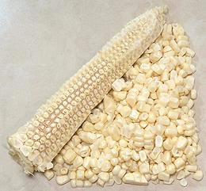
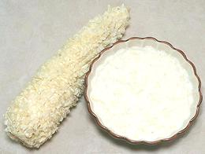

This corn is harvested in the "milk stage" when the kernels contain a sweet white liquid. Unfortunately most people do not experience it at its best, because it should go directly from the corn stalk to boiling water. The problem is, as soon as it's picked the sugars start to convert into starches. Today's very sweet white and yellow varieties have been developed to hold their sweetness as long as possible, but it still fades fairly rapidly.
More on Corn.
Do not pull off the husks in the store, that will just accelerate the conversion of sugar to starch. Pull them off just before cooking. Some people cut a little off the stem end and stand their cobs stem down in a bowl of sugar water in an attempt to fool the corn into thinking it's still on the plant. I haven't tested this, so I don't know how well it works. I refrigerate to slow conversion. Cook it as soon as you can - see our recipe Corn on the Cob.
There are special tools for stripping corn kernels, but in my experience, and according to other writers, they don't work very well. A very sharp thin santoko knife works best. The Sweet Corn shown in the photos below is White Corn, which is by far the most common in markets here in Los Angeles.
 Just hold the cob straight upright by the tip with the stem end against you cutting board. Make several cuts down the side, guiding the knife so it is tight against cob. 5 or 6 cuts will do it, leaving amazingly little edible still on the cob.
Some people use a Bundt Pan, setting the point of the cob in the central tube, then cutting as above. This stabilizes the cob, and the pan collects all the kernels. I don't bother with this, my cutting board is large, and few kernels make it off the edges.
Yield: A 14 ounce cob (with husks and stem - 9 ounces husked
and stems cut) will yield about 4-3/4 ounces of kernels. Two cobs will equal
about the same as one 15 ounce can of whole kernel corn, drained.
 For this, you want just the creamy contents of the kernels, leaving all the skins behind. Take your very sharp knife and holding the cob firmly, slice deeply down each row, right down the center of the kernels. Now hold the cob from the tip, wide end firmly on you cutting board. Use the back side, not the sharp side, of you prep knife to scrape down the cob all around. You want to leave all the empty skins with the cob, so don't scrape so hard they are pulled loose.
Yield: A 14 ounce cob (with husks and stem - 9 ounces husked and stems cut) will yield about 3.7 ounces of milk and pulp. This yield is increased by the necessity of adding water when cooking.
Cooking: You'll have to add about 2 Tablespoons of water per
cob of corn to get about the consistency of canned "cream style" corn, as the
milk will solidify when heated, so your yeild will be about 4.7 ounces per cob.